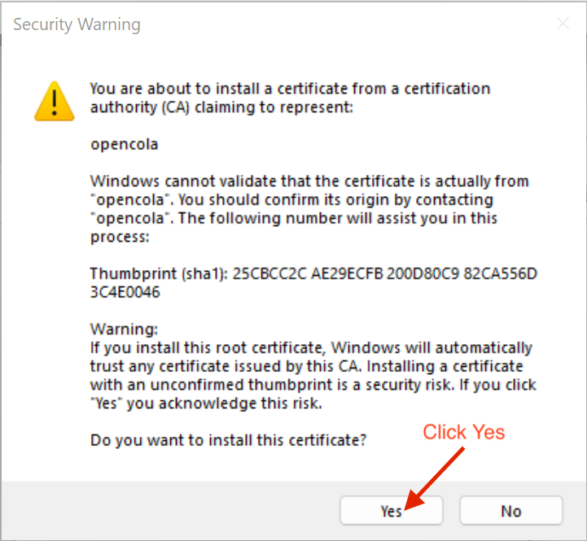

Welcome to OpenCola!
In order to access OpenCola over a secure connection, you need to install an SSL certificate. This keeps your password and data private.
1. Click Install Certificate
2. You will see a Security Warning similar to the image below. Click Yes
